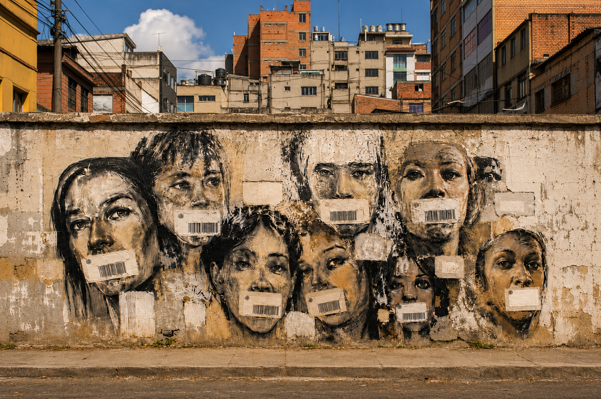

Inicio > Blog Bitácora de un bibliotecario > Bibliotecología comunitaria con un giro decolonial (08)
Bibliotecología comunitaria con un giro decolonial (08)
Escuchando a los márgenes
Sirviendo a los que no son escuchados
Este post forma parte de una serie que recupera la bibliotecología comunitaria de sus distorsiones institucionales, devolviéndola a sus raíces en la lucha, la ayuda mutua y la supervivencia colectiva. Considera las bibliotecas no como servicios neutrales, sino como infraestructuras en disputa, atravesadas por relaciones de poder, resistencia y memoria, y explora la bibliotecología como un trabajo de solidaridad anclado en comunidades reales, conflictos reales y la tensión constante entre el control institucional y la autonomía colectiva. Todas las entradas de esta serie pueden consultarse en el índice de esta sección.
El problema de "dar voz"
En el discurso institucional, el trabajo con comunidades marginadas suele describirse a través del lenguaje de la voz. Bibliotecas, archivos, museos, universidades, ONGs e instituciones culturales afirman "dar voz" a quienes han sido excluidos, silenciados, ignorados o relegados a los márgenes.
La intención puede ser generosa. La formulación no lo es.
Decir que una institución "da voz" presupone que esta se concede desde fuera. Sitúa a la institución en el centro del acto, como si las personas marginalizadas guardaran silencio hasta que un espacio autorizado les permitiera hablar. Convierte la escucha en benevolencia, y hace que el reconocimiento parezca un regalo institucional.
Pero las comunidades marginalizadas no carecen de voz.
Hablan, recuerdan, nombran, interpretan, se organizan, advierten, se niegan, lloran, enseñan y transmiten. Y lo hacen de maneras que pueden no ajustarse a los formatos profesionales o a las expectativas institucionales, lo cual no significa que todas esas acciones estén ausentes. Solo las hace más fácilmente ignorables.
El problema no es la ausencia de voz. El problema es la organización de la inaudibilidad.
Algunas voces no se escuchan porque no se ajustan a los formatos reconocidos. Otras solo se escuchan después de ser traducidas al lenguaje institucional. Otras se tratan como anecdóticas, emocionales, excesivas o insuficientemente documentadas. Algunas solo se solicitan cuando pueden respaldar un proyecto, una exposición, un informe, una solicitud de subvención o una declaración pública. Algunas se ignoran porque perturban la versión oficial de la realidad.
En este sentido, la tarea de la bibliotecología comunitaria no es dar voz a los que no la tienen. Es confrontar las estructuras que deciden qué discurso se vuelve inteligible, útil, legítimo o fácil de ignorar.
Los márgenes se construyen
El término "márgenes" puede ser engañoso si se trata como un lugar natural. Puede sugerir que algunas personas simplemente viven al margen de la sociedad, como si la marginalidad fuera una geografía social en lugar de una condición política.
Pero los márgenes se construyen.
Son producto de la pobreza, el racismo, las historias coloniales, la violencia de género, los regímenes migratorios, las jerarquías lingüísticas, la exclusión burocrática y la negligencia institucional. También son fruto de los sistemas de conocimiento: de las categorías que clasifican a las personas, los vocabularios que las nombran y los procedimientos que deciden si sus experiencias cuentan como evidencia.
Las bibliotecas no son ajenas a estos procesos. Participan directamente en ellos.
Una colección puede marginar al excluir materiales. Un catálogo puede marginar al usar nombres impuestos. Un sistema de clasificación puede marginar al fragmentar mundos coherentes en categorías inconexas. Una política de acceso puede marginar al exigir documentos, lenguaje, habilidades digitales o códigos de comportamiento que algunas personas no pueden o no deberían tener que cumplir.
Por esta razón, escuchar a los márgenes no significa tratar a los grupos marginalizados como objetos de atención. Requiere preguntarse cómo la propia biblioteca participa en la producción de esa marginalidad.
¿A quién se le ha hecho difícil encontrar? ¿A quién se le ha descrito desde fuera? ¿Quién aparece solo como un problema, un grupo objetivo, un beneficiario o un caso? ¿Quiénes solo están presentes después de ser encasillados en categorías que no les corresponden?
Estas preguntas son importantes porque la bibliotecología comunitaria no puede servir a quienes no son escuchados sin examinar antes cómo se produce esa invisibilidad.
La escucha empieza ahí. No con una invitación a hablar, sino con un análisis de las condiciones que han hecho que ciertas voces sean ilegibles, peligrosas o prescindibles.
Escuchar no es inclusión
A menudo "escucha" se confunde con "inclusión".
Una institución puede invitar a personas marginadas a compartir sus historias, participar en consultas, contribuir a las colecciones, asistir a programas o aparecer en eventos públicos. Estas iniciativas pueden crear oportunidades reales. Y, al mismo tiempo, pueden reproducir las estructuras que pretenden desafiar.
El problema no es que la inclusión sea inútil. Es que la inclusión puede dejar la autoridad intacta.
Una biblioteca puede incluir voces marginadas manteniendo el control del marco. Puede decidir el tema, el formato, el lenguaje, las categorías descriptivas, el nivel de visibilidad, las condiciones de acceso y el uso final de lo que se comparte. Puede invitar a gente a hablar sin permitirles definir el significado de su discurso dentro de la institución.
En estos casos, la escucha se convierte en un evento controlado.
La comunidad es escuchada, en efecto, pero la institución sigue siendo la intérprete. La historia se recopila, pero la institución controla el archivo. El testimonio se valora, pero la institución decide su relevancia. La experiencia se reconoce, pero solo después de haber sido procesada para que sea aceptable.
Eso no es redistribución. Es incorporación.
La incorporación integra las voces marginadas en estructuras ya existentes. La redistribución cambia las estructuras que deciden qué pueden hacer esas voces.
Un enfoque centrado en la comunidad debe, por ende, ir más allá de la simple cuestión de la presencia. Debe preguntarse si las voces marginadas pueden modificar la organización de la propia biblioteca.
Si no influyen en las colecciones, la descripción, el acceso, la programación, la evaluación o la gobernanza, entonces la biblioteca no ha escuchado. Simplemente ha dado cabida a la expresión.
Escuchar como redistribución epistémica
Escuchar se vuelve radical cuando cambia quién tiene la autoridad para definir qué importa.
Esa autoridad no es abstracta. Se manifiesta en el trabajo bibliotecario cotidiano. Lo hace cuando un catálogo elige un nombre y rechaza otro, cuando el conocimiento oral se considera secundario a la documentación escrita, cuando las categorías locales se reemplazan por términos estandarizados, o cuando la memoria comunitaria se acepta como patrimonio, pero no como factor de análisis.
Escuchar con atención implica perturbar ese orden.
Significa reconocer a las personas marginalizadas no solo como fuentes de historias, sino como productoras de interpretación. Sus categorías, prioridades, recuerdos, silencios, dudas y rechazos no son añadidos decorativos al sistema: son parte de la propia relación del conocimiento.
Esto requiere reorientar el juicio profesional. El bibliotecario no es quien extrae el significado del discurso comunitario y lo traduce a un formato institucional. El bibliotecario debe convertirse en participante de un campo de autoridad más complejo, donde el saber profesional debe responder al conocimiento situado y a las consecuencias vividas.
Este cambio resulta difícil porque las instituciones están acostumbradas a escuchar desde arriba.
Piden a las comunidades que se expliquen, pero rara vez aceptan que ellas sean las que pidan explicaciones. Solicitan testimonios, pero se resisten al diagnóstico. Acogen con beneplácito las historias de exclusión, pero se incomodan cuando esas historias identifican a la propia institución como parte del problema.
Escuchar como redistribución epistémica significa aceptar que las comunidades no solo pueden describir sus condiciones, sino también interpretar los sistemas que las producen. Pueden nombrar la violencia institucional, rechazar las categorías profesionales, negarse a ser visibles, definir las necesidades de manera diferente y exponer los límites del propio lenguaje de la biblioteca.
Una biblioteca que no puede transformarse con lo que escucha no está escuchando. Está acumulando sonidos.
Una escucha que transforme la biblioteca
La escucha suele considerarse una etapa preliminar.
Primero, la biblioteca escucha. Luego, diseña servicios, ajusta colecciones, desarrolla programas o redacta políticas. Escuchar se convierte en un método para mejorar el desempeño institucional.
Pero en la bibliotecología comunitaria, escuchar no puede ser solo una técnica preparatoria o una antesala para lo "importante". Debe convertirse en una fuerza que transforme la biblioteca.
Cuando las voces marginalizadas se vuelven verdaderamente prioritarias, las estructuras internas de la biblioteca no logran mantenerse inalteradas. El desarrollo de las colecciones, su descripción, el acceso, la evaluación, la gobernanza e incluso el lenguaje público de la institución cambian.
Y aquí es donde muchas instituciones se resisten.
Suelen estar dispuestas a escuchar, siempre y cuando tal escucha produzca ajustes manejables. Pueden aceptar nuevos programas, colecciones temáticas, eventos públicos, declaraciones de inclusión, testimonios emotivos, celebraciones culturales y consultas limitadas. Incluso pueden aceptar críticas, siempre que se mantengan dentro del formato de retroalimentación.
A lo que se resisten es trasferir su autoridad.
Se resisten cuando las comunidades piden definir prioridades. Se resisten cuando el idioma local desafía el vocabulario estandarizado, cuando el acceso se restringe por razones que no se ajustan a la apertura institucional, cuando se prefiere el silencio a la documentación, o cuando la evaluación debe responder a valores definidos por la comunidad en lugar de a métricas administrativas.
Esa resistencia revela los límites (y las líneas rojas) de la escucha institucional.
Una biblioteca no puede decir que ha escuchado por el mero hecho de haber creado un espacio para la expresión comunitaria. Ha escuchado cuando permite que las consecuencias de esa expresión reorganicen sus prácticas.
Esto no significa que deba aceptar cualquier demanda sin debate. Las bibliotecas operan dentro de limitaciones legales, técnicas, financieras y éticas. Pero esas limitaciones deben ser reconocidas con honestidad. No deben disfrazarse de inevitabilidad profesional ni usarse para proteger la comodidad institucional frente a la autoridad de la comunidad.
Una escucha que transforme la biblioteca requiere una postura diferente. La institución debe estar dispuesta a ser interrumpida, corregida, reorientada y, a veces, rechazada. Debe aceptar que las voces marginalizadas no están ahí para enriquecer su imagen. Están ahí, si deciden estarlo, como portadoras de conocimiento, memoria, diagnóstico y autoridad.
Servir a los que no son escuchados
Servir a los que no son escuchados no significa hablar por ellos.
No significa convertirlos en contenido, invitarlos a un programa y llamar a eso "justicia". No significa recopilar sus historias sin modificar las estructuras que dificultaron que esas historias fueran escuchadas en primer lugar.
Servir a los que no son escuchados exige confrontar la inaudibilidad organizada. Exige reconocerla. Las comunidades marginalizadas no necesitan autorización institucional para tener voz, memoria o interpretación. Lo que necesitan es control sobre las condiciones en las que se escuchan, protegen, difunden o retienen esos conocimientos.
Eso cambia el significado de escuchar.
Escuchar no es amabilidad. No es una cortesía profesional. No es una habilidad blanda. No es la expresión emocional de la inclusión. Escuchar es una acción política, porque cambia quién tiene derecho a definir los términos.
Una biblioteca comunitaria que escucha desde los márgenes no coloca a las personas marginalizadas en el centro como mero adorno. Permite que sus conocimientos transformen ese centro. Y todo lo demás.
Es entonces cuando escuchar deja de ser un acto simbólico y se convierte en un cambio estructural.